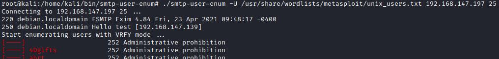
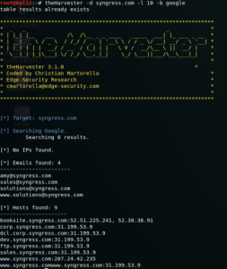

Enumerate Users with Tools
•
nmap smtp-enum-users.nse (BEST for very basic
enumration)
Attempts to enumerate the users on a SMTP server by issuing the VRFY, EXPN or RCPT TO commands.
The goal of this script is to discover all the user accounts in the remote system.
root@kali:/# nmap --script smtp-enum-users.nse <ipTargetMailServer>
*the username tested are only 10 how we can see from the source code here:
https://github.com/nmap/nmap/blob/master/nselib/data/usernames.lst•
smtp-user-enum from Cytopia:
https://github.com/cytopia/smtp-user-enum (BEST for custom
user list)
To enumerate with a custom list of users in a text file
Listof Metasploit:
https://github.com/rapid7/metasploit-framework/blob/master/data/wordlists/unix_users.txt
root@kali:/# git clone https://github.com/cytopia/smtp-user-enum.git
root@kali:/# ./smtp-user-enum -U /usr/share/wordlists/metasploit/unix_users.txt 192.168.147.197 25
•
smtp-user-enum from PentestMonkey:
http://pentestmonkey.net/tools/user-enumeration/smtp-user-enum
Less updated, to enumerate with a custom list of users in a text file
root@kali:/# mkdir smtp-user-enum-PentestMokey
root@kali:/# cd smtp-user-enum-PentestMokey
root@kali:/# wget https://raw.githubusercontent.com/pentestmonkey/smtp-user-enum/master/smtp-user-enum.pl #tool
root@kali:/# chmod +x smtp-user-enum.pl
root@kali:/# ./smtp-user-enum.pl -M RCPT -U /usr/share/wordlists/metasploit/unix_users.txt -t 192.168.147.192
root@kali:/# ./smtp-user-enum.pl -M VRFY -U /usr/share/wordlists/metasploit/unix_users.txt -t 192.168.147.192
root@kali:/# ./smtp-user-enum.pl -M EXPN -U /usr/share/wordlists/metasploit/unix_users.txt -t 192.168.147.192
• Metasploit
smtp_enum:
https://www.rapid7.com/db/modules/auxiliary/scanner/smtp/smtp_enum
code:
https://github.com/rapid7/metasploit-framework/blob/master/modules/auxiliary/scanner/smtp/smtp_enum.rb
By default as username list it use /usr/share/wordlists/metasploit/unix_users.txt
msf> use auxiliary/scanner/smtp/smtp_enum
msf> set RHOSTS 192.168.147.192 #target IP
msf> set USER_FILE /usr/share/wordlists/metasploit/unix_users.txt #default
msf> run
List of usernames
To have a list of potential usernames we can use:
•
Metasploit Unix
Usernames(BEST for SMTP):
List:
https://github.com/rapid7/metasploit-framework/blob/master/data/wordlists/unix_users.txt
common Unix usernames
cat /usr/share/wordlists/metasploit/unix_users.txt
•
statistically-likely-usernames: list of usernames
https://github.com/insidetrust/statistically-likely-usernames
◇ john.txt contains popular names:
https://github.com/insidetrust/statistically-likely-usernames/blob/master/john.txt
root@kali:/# wget https://raw.githubusercontent.com/insidetrust/statistically-likely-usernames/master/john.txt #complete list of popular names
root@kali:/# head -n 50 john.txt >> users.txt #only first 50 names, very small!!!!
•
TheHarvester:
https://github.com/laramies/theHarvester It can be a
passive reconnaissance using a search engine like google or
an
active reconnaissance using a DNS
./theharvester.py -d <site to scan> -l <number of result> -b <search engine>
theHarvester -d <site to scan> -l <number of result> -b <search engine>
example:  -d: Domain to search or company
name
-b: data source: all (simultaneously search in all the sources), baidu, bing, bingapi,
dogpile, google, googleCSE, googleplus, google-profiles, linkedin, pgp, twitter, vhost, virustotal, threatcrowd,
crtsh, netcraft, yahoo
-l: limit the number of results to work with
-c: perform a DNS brute force for the domain name(active reconnaissance)
{kind=link}